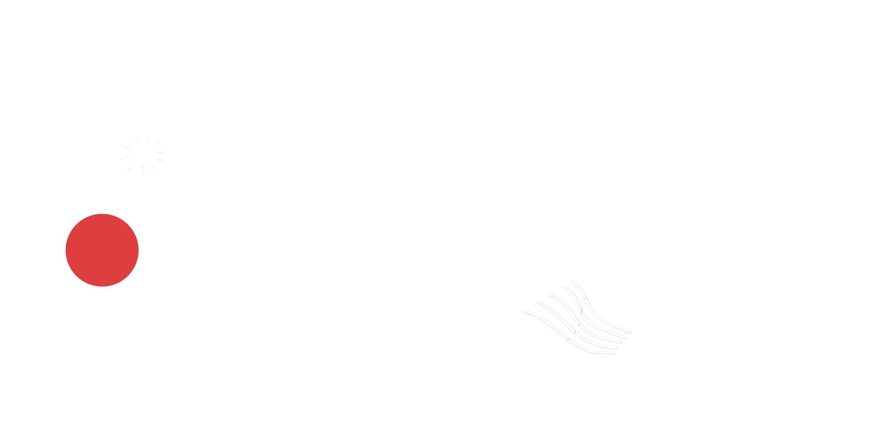
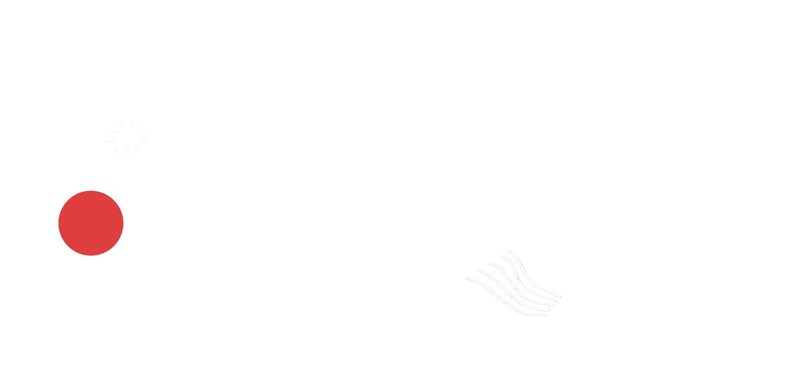

We are here to
TelePossible
exists to provide consistent medical aid to developing countries. We establish a nationwide
telemedicine governance in collaboration with international and local medical staff, starting in Laos
Providing consistent, long-term
medical aid to developing countries. Overcome difficulties of providing in-person diagnoses due to
Covid-19 and other infectious diseases. Help countries in need of medical aid beginning with Laos
and expanding worldwide.
 



Social Obligation


Obligation as a Global Citizen

Moral Obligation

OBLIGATIONS
TelePossibles Three Obligations


ACTIONS
Leading to change
begins here
begins here
Our first target population are Laotian citizens in the Lao People's Democratic Republic. We designated our service to two community centers located in Vientiane, the capital of Laos. These
centers are and will continue to be run by Korean missionary leaders who have been residing in the
country since pre-COVID 19 times. Kiosks within these cites will provide visiting patients with
necessary equipment for full access to our platform.
DONATION GOALS
We need your help
to make this happen
to make this happen


How can I get involved TelePossible and help others?
Unlike a face-to-face medical appointment where a doctor can directly check the patient's
physical condition and symptoms, remote telemedicine communication only allows doctors to provide
diagnosis through indirect measures, such as patient's descriptions of their symptoms, x-ray,
blood pressure, and other various data. Therefore, we need doctors who are willing to provide
accurate and good-faith diagnoses to patients overseas. By joining TelePossible today, you can bring
a brighter future to those in need tomorrow.
Establish nationwide telemedicine governance in collaboration
with international and local medical staff
with international and local medical staff
Overcome difficulties of providi ng in-person diagnoses
due to COVID-19 and other infectious disease
due to COVID-19 and other infectious disease
Help countries in need of medical aid beginning with Laos and expanding worldwide
TelePossible needs
doctors help
doctors help
We are in the process of recruiting doctors and physicians for our service. Our mission is to provide
consistent, long-term medical aid to developing countries. The hope is that the TelePossible can provide
a meaningful medical platform that can break the spatial, and language barrier between nations.
A relationship where we care
CONTACT INFO
E-MAIL : info@telepossible.com
Telephone : +1 - 484 - 743 - 6940
Telephone : +1 - 484 - 743 - 6940
CONNECT WITH US
TelePossible Inc. is a nonprofit, tax-exempt charitable organization under Section 501(c)(3) of the
Internal Revenue Code. Donations are tax-deductible as allowed by law
Copyright © 2021 TelePossible